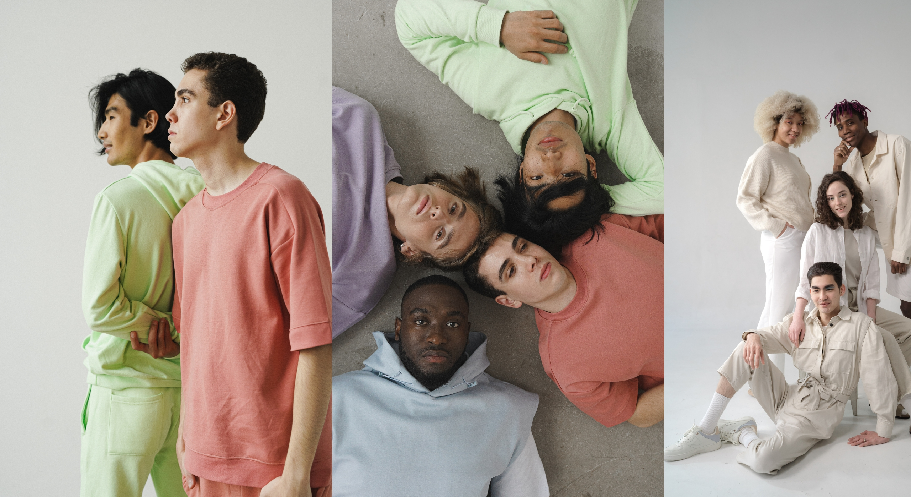
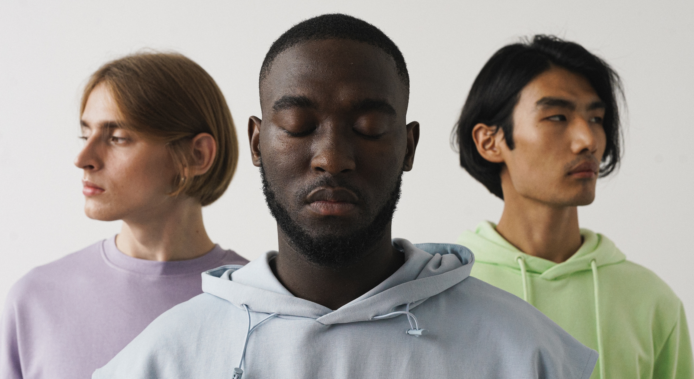

Denkzono: Redefining Elegance with German-Engineered Minimalist Apparel
In the realm of minimalist fashion, Denkzono stands as a testament to the power of simplicity. As the designer behind this German apparel brand’s identity, I leveraged my expertise to create a logo that encapsulates the brand’s core philosophy: less is more. This project exemplifies my ability to distill complex concepts into clear, impactful designs that resonate with the audience and align with the brand’s vision. Through Denkzono, I demonstrate not just my design skills, but my capacity to solve problems creatively and deliver a brand story that speaks volumes without saying a word.


Embarking on the design journey for Denkzono, I embraced a holistic approach that melds creativity with strategic problem-solving. This process, meticulously crafted to echo the brand’s minimalist ethos, unfolds through a series of stages—from initial research and conceptualization to the final launch. Each step is a testament to my commitment to excellence, ensuring that the resulting identity not only captures the essence of Denkzono but also stands as a beacon of innovation in design.
Client Denkzono, a forward-thinking German apparel brand that values minimalist design and thoughtful fashion
Sector Fashion and Apparel
Discipline Brand Identity Design, encompassing logo creation, visual storytelling, and strategic brand positioning to resonate with the target audience and establish a strong market presence
Design Process:
Discovery and Research: The first step was an in-depth discovery phase, where I immersed myself in the brand’s ethos, understanding Denkzono’s mission, vision, and target audience. This involved analyzing market trends, competitor brands, and the unique value proposition of Denkzono.
Concept Development: With a solid understanding of the brand’s foundation, I began brainstorming and sketching initial concepts. This creative exploration was guided by the principles of minimalism and functionality, key attributes of the Denkzono brand.
Design Iteration: The most promising ideas were then developed into more refined designs. Through a series of iterations, I collaborated closely with the Denkzono team, ensuring that each design choice was intentional and aligned with the brand’s identity.
Feedback and Refinement: Constructive feedback was an integral part of the process. Each design was critiqued not just for its aesthetic appeal but also for its ability to solve the brand’s challenges and communicate its message effectively.
Finalization: The chosen logo was then perfected with meticulous attention to detail, ensuring that it would be versatile across various mediums and applications, from digital platforms to physical merchandise.
Brand Guidelines: To maintain consistency, I developed comprehensive brand guidelines, detailing the usage of the logo, color palette, typography, and other visual elements that constitute the Denkzono brand identity.
Launch and Implementation: The final step was the launch of the brand identity, where I oversaw the implementation across all touchpoints, ensuring a cohesive and impactful brand presence.


“Far far away, behind the word mountains, far from the countries Vokalia and Consonantia, there live the blind texts. Separated they live in Bookmarksgrove”
— Job Smith CEO and Founder


The Denkzono project is a testament to my ability to delve deep into a brand’s essence and emerge with a visual identity that speaks volumes. Faced with the challenge of encapsulating Denkzono’s minimalist philosophy, I embarked on a journey of discovery, aligning the brand’s vision with a design that resonates with clarity and purpose. My solution was not merely aesthetic but a strategic alignment of form and function, resulting in a logo that is both timeless and evocative.
This project exemplifies my expertise in transforming a client’s vision into a tangible asset that propels their brand forward. It demonstrates my capacity to listen, interpret, and execute with precision—qualities that are indispensable in a designer. For those viewing this project, it is a clear indication of my commitment to delivering exceptional design solutions that are both innovative and relevant. Hiring me means investing in a designer who not only solves problems but also adds value, ensuring that your brand’s identity is crafted to leave a lasting impression.